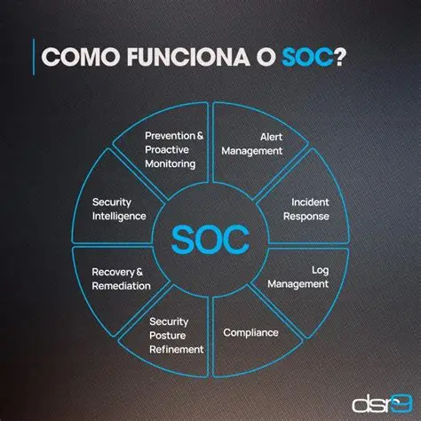

Hello!
Кто такой SOC‑аналитик
SOC‑аналитик (Security Operations Center Analyst) — специалист по кибербезопасности, отвечающий за мониторинг, выявление и реагирование на инциденты в ИТ‑инфраструктуре организации.

SOC (Security Operations Center) — это центр мониторинга и реагирования на киберугрозы, работающий в режиме 24/7. Его главная цель — минимизация времени обнаружения (MTTD) и времени реагирования (MTTR) на атаки.

- Круглосуточный мониторинг событий безопасности из разных источников (сети, серверов, рабочих станций, облачных сервисов)
- Анализ инцидентов: отсеивание ложных срабатываний, классификация угроз, определение критичности.
- Реагирование на инциденты: изоляция заражённых хостов, блокировка вредоносных IP/доменов, сбор доказательств.
- Написание и настройка правил корреляции для SIEM‑систем.
- Документирование инцидентов и подготовка отчётов для руководства
- Взаимодействие с другими командами (IT, Legal, PR) при серьёзных атаках.
- Проактивный поиск угроз (threat hunting) в инфраструктуре.
- SIEM‑системы (Splunk, IBM QRadar, ArcSight, MaxPatrol SIEM) — агрегация и анализ логов, корреляция событий.
- SOAR‑платформы (Cortex XSOAR, IBM Resilient) — автоматизация реагирования, плейбуки.
- EDR/XDR (CrowdStrike, SentinelOne, Microsoft Defender for Endpoint) — мониторинг конечных точек.
- Сетевые анализаторы (Wireshark, Suricata, Zeek) — разбор трафика, выявление аномалий.
- Threat Intelligence (AlienVault OTX, MISP, VirusTotal) — базы индикаторов компрометации (IOC).
- Лог‑менеджеры (ELK Stack, Graylog) — сбор и визуализация логов.
- Песочницы (Cuckoo, Fidelis Sandbox) — анализ вредоносного ПО.
- Скриптинг (Python, PowerShell, Bash) — автоматизация рутинных задач.
Правила корреляции — это логические условия, которые SIEM использует для объединения разрозненных событий в потенциальный инцидент.
Пример 1. Подозрительный вход с необычного местоположения
Условие:
- Событие входа в систему (Event ID 4624 в Windows).
- IP‑адрес входа не входит в белый список корпоративных сетей.
- Время входа — вне рабочих часов (например, 02:00–05:00).
Правило (на псевдокоде):
IF (EventID = 4624)
AND (SourceIP NOT IN whitelist)
THEN Alert
Действие:
- Отправить уведомление в чат SOC.
- Заблокировать учётную запись на 15 минут.
- Запросить подтверждение у пользователя через SMS.
Пример 2. Попытка брутфорса RDP
Условие:
- Более 10 неудачных попыток входа (Event ID 4625) за 5 минут.
- Один и тот же источник IP.
- Цель — сервер с открытым портом 3389 (RDP).
Правило (на псевдокоде):
IF (COUNT(EventID = 4625) > 10)
WITHIN 5 MINUTES
GROUP BY SourceIP
HAVING (DestinationPort = 3389)
THEN Trigger Alert: "RDP Bruteforce Attempt"
Действие:
- Добавить IP в чёрный список на межсетевом экране.
- Отправить алерт дежурному аналитику.
- Проверить другие серверы на признаки сканирования.
Пример 3. Утечка данных через DNS
Условие:
- DNS‑запросы к неизвестным доменам с длинными поддоменами (признак DNS tunneling).
- Более 50 запросов за 1 минуту.
- Ответ сервера содержит Base64‑данные.
Правило (на псевдокоде):
IF (DNS_Query_Length > 100)
AND (COUNT(DNS_Query) > 50) WITHIN 1 MINUTE
AND (Response_Contains_Base64 = TRUE)
THEN Trigger Alert: "Possible DNS Data Exfiltration"
Действие:
- Изолировать хост от сети.
- Собрать дамп памяти и сетевые сессии.
- Проверить процесс, инициировавший запросы.
Как создаются правила корреляции
- Определение сценария угрозы (например, фишинг, ransomware, lateral movement).
- Выявление индикаторов (логи, сетевой трафик, изменения файлов).
- Формулировка условий в синтаксисе SIEM (Splunk SPL, QRadar AQL).
- Тестирование на исторических данных.
- Настройка исключений (whitelist, false positive suppression).
- Внедрение и мониторинг эффективности.
Важные навыки SOC‑аналитика
- Знание протоколов (TCP/IP, DNS, HTTP/HTTPS, SMB).
- Умение читать логи Windows/Linux, сетевых устройств.
- Понимание техник злоумышленников (MITRE ATT&CK).
- Базовые навыки программирования для выявления скрытых угроз.
- Аналитическое мышление для выявления скрытых угроз.
- Стрессоустойчивость при работе с критическими инцидентами.
Подведем итоги
SOC‑аналитик — это «страж» цифровой инфраструктуры, который сочетает технические знания, аналитический склад ума и оперативность в принятии решений. Его работа позволяет организациям:
- сокращать время обнаружения угроз;
- минимизировать ущерб от атак;
- поддерживать непрерывность бизнес‑процессов.
Эффективность SOC напрямую зависит от качества правил корреляции, скорости реагирования и постоянного обучения команды новым тактикам злоумышленников.